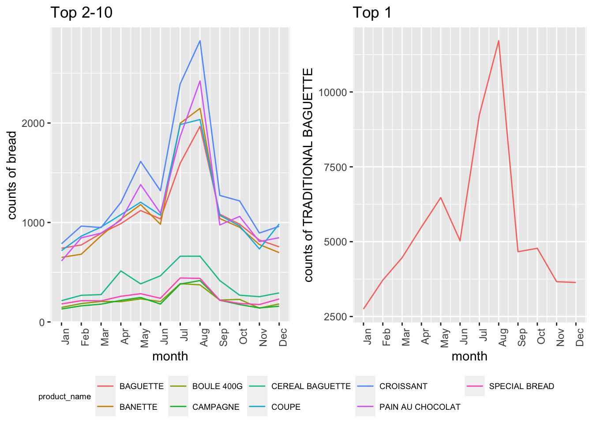

Exploratory Analyses
knitr::opts_chunk$set(message = FALSE)
library(tidyverse)
library(lubridate)
library(plotly)
library(patchwork)
library(ggpubr)
library(ggplot2)In Exploratory Analyses, we are focusing on product count, unit price, revenue, and time trend by using pie, donut, bar, line, and scatter plot.
Summary of packages
tidyverse, lubridate, plotly, patchwork, ggpubr, ggplot2
bakery_df =
read_csv("./Data/Bakery_sales.csv") %>%
janitor::clean_names() %>%
mutate(
unit_price = str_replace(unit_price, "€", ""),
unit_price = str_replace(unit_price, ",", "."),
unit_price = as.numeric(unit_price),
product_name = article) %>%
filter(product_name != ".") %>%
select(-article)Introduction & Background
We used updated version dataset of a French bakery from 2021-01-01 to 2022-09-30. The dataset provides the daily transaction details of customers. Since the dataset is still updating, we used downloaded version on 2022-12-03.
The dataset includes:
date: date order
time: time order
ticket number: identifier for every single
transaction
article: name of the product sold (in French)
quantity: quantity sold
unit_price: price per product (in Euro)
objective: forecast the sales in order to ease the
production planning
It contains 7 variables and 234000 observations.
Firstly, we used read_csv() to import the dataset
“Bakery_sales.csv”, and applied janitor::clean_names() to
change the variables’ names into lower cases. Next, we tidied dataset by
applying mutate() to remove the euro sign “€”, change “,”
to “.”, convert unit_price to numeric form, and renamed the
article as product_name. Finally, we deleted
the missing data via filter() and article via
select().
Visualization
Top 10 favorite bakery products
plot_pie =
bakery_df %>%
group_by(product_name) %>%
summarize(n_obs = n()) %>%
arrange(desc(n_obs)) %>%
head(10) %>%
plot_ly(labels = ~product_name, values = ~n_obs, type = 'pie', colors = "viridis") %>%
layout(xaxis = list(showgrid = FALSE, zeroline = FALSE, showticklabels = FALSE),
yaxis = list(showgrid = FALSE, zeroline = FALSE, showticklabels = FALSE))
plot_pieThe pie chart shows the total of sale counts of top 10 favorite
bakery products from 2021-01-01 to 2022-09-30. As the plot shows that
the TRADITIONAL BAGUETTE (67,689; 42.5%) is the most
favorite bakery product. The rest ranking from top 2 to top 10 favorite
bakeries are COUPE (20,470; 12.90%), BAGUETTE
(15,292; 9.61%) BANETTE (15,130; 9.51%),
CROISSANT (11,508; 7.23%), PAIN AU CHOCOLAT
(10,578; 6.65%), SPECIAL BREAD (5195; 3.26%),
CEREAL BAGUETTE (4961; 3.12%),
FORMULE SANDWITCH (4202; 2.64%), and
BOULE 400G (4099; 2.58%), respectively.
Top 10 favorite bakery products in 2021/2022
plot_pie =
bakery_df %>%
separate(date, into = c("year", "month", "day"), sep = "-") %>%
mutate(year = as.numeric(year),
month = as.integer(month),
day = as.integer(day),)
plot_pie_2021 =
plot_pie %>%
filter(year == 2021) %>%
group_by(product_name) %>%
summarize(n_obs = n()) %>%
arrange(desc(n_obs)) %>%
head(10) %>%
plot_ly(labels = ~product_name, values = ~n_obs) %>%
add_pie(hole = 0.6) %>%
layout(title = 'Top 10 favorite bakery products in 2021',
xaxis = list(showgrid = FALSE, zeroline = FALSE, showticklabels = FALSE),
yaxis = list(showgrid = FALSE, zeroline = FALSE, showticklabels = FALSE))
plot_pie_2022 =
plot_pie %>%
filter(year == 2022) %>%
group_by(product_name) %>%
summarize(n_obs = n()) %>%
arrange(desc(n_obs)) %>%
head(10) %>%
plot_ly(labels = ~product_name, values = ~n_obs) %>%
add_pie(hole = 0.6) %>%
layout(title = 'Top 10 favorite bakery products in 2022',
xaxis = list(showgrid = FALSE, zeroline = FALSE, showticklabels = FALSE),
yaxis = list(showgrid = FALSE, zeroline = FALSE, showticklabels = FALSE))
plot_pie_2021plot_pie_2022The first donut chart shows the total of sale counts of top 10
favorite bakery products from 2021-01-01 to 2021-12-31. As the plot
shows that the TRADITIONAL BAGUETTE (37,399; 42%) is the
most favorite bakery . The rest ranking from top 2 to top 10 favorite
bakeries are COUPE (11,759; 13.2%), BAGUETTE
(8713; 9.78%) BANETTE (8575; 9.63%), CROISSANT
(6291; 7.06%), PAIN AU CHOCOLAT (5739; 6.44%),
CEREAL BAGUETTE (3070; 3.45%), SPECIAL BREAD
(2936; 3.3%), CAMPAGNE (2289; 2.57%), and
BOULE 400G (2283; 2.46%), respectively.
The second donut chart shows the total of sale counts of top 10
favorite bakery products from 2022-01-01 to 2022-09-30. As the plot
shows that the TRADITIONAL BAGUETTE (30,290; 43.2%) is the
most favorite bakery . The rest ranking from top 2 to top 10 favorite
bakeries are COUPE (8711; 12.4%), BAGUETTE
(6579; 9.38%) BANETTE (6555; 9.35%), CROISSANT
(5217; 7.44%), PAIN AU CHOCOLAT (4839; 6.9%),
SPECIAL BREAD (2259; 3.22%), FORMULE SANDWITCH
(1976; 2.82%), CEREAL BAGUETTE (1891; 2.7%), and
BOULE 400G (1816; 2.59%), respectively.
Compared donut charts of 2021 and 2022, the ranking of top 1-6
favorite bakeries does not change. CAMPAGNE dropped out of
the top 10 list, and FORMULE SANDWITCH was added the top 10
favorite bakery products in 2022. Top 7-9 moved slightly from 2021 to
2022. Top 10 BOULE 400G stayed in the same position.
Top 10 favorite bread monthly sale counts in 2021
top_line =
bakery_df %>%
separate(date, into = c("year", "month", "day"), sep = "-") %>%
mutate(year = as.numeric(year),
month = as.integer(month),
day = as.integer(day),) %>%
filter(year == 2021) %>%
select (year, month, product_name, quantity) %>%
group_by (year, month, product_name) %>%
mutate (total_counts = sum (quantity)) %>%
distinct(year, month, product_name,total_counts)
top_line1_2021 =
top_line %>%
filter(product_name %in% c("TRADITIONAL BAGUETTE")) %>%
ggplot(aes(x =month, y = total_counts, color = product_name)) +
geom_line() +
theme(axis.text.x = element_text(angle=90,hjust = 1), legend.position = "none") +
labs(x = "month",
y = "counts of TRADITIONAL BAGUETTE",
title = "Top 1") +
scale_x_continuous(
breaks = c(1, 2, 3, 4, 5, 6, 7, 8, 9, 10, 11, 12),
labels = c("Jan","Feb","Mar","Apr","May", "Jun", "Jul", "Aug", "Sep", "Oct", "Nov", "Dec"))
top_line2_2021 =
top_line %>%
filter(product_name %in% c("COUPE", "BAGUETTE","BANETTE", "CROISSANT", "PAIN AU CHOCOLAT", "CEREAL BAGUETTE", "SPECIAL BREAD", "CAMPAGNE", "BOULE 400G")) %>%
ggplot(aes(x =month, y = total_counts, color = product_name)) +
geom_line() +
theme(axis.text.x = element_text(angle=90,hjust = 1), legend.position = "none", legend.title = element_text(size=7), legend.text = element_text(size=7)) +
labs(x = "month",
y = "counts of bread",
title = "Top 2-10") +
scale_x_continuous(
breaks = c(1, 2, 3, 4, 5, 6, 7, 8, 9, 10, 11, 12),
labels = c("Jan","Feb","Mar","Apr","May", "Jun", "Jul", "Aug", "Sep", "Oct", "Nov", "Dec"))
ggarrange(top_line2_2021, top_line1_2021, ncol=2, nrow=1, common.legend = TRUE, legend="bottom")
In general, monthly sale counts in 2021 increased dramatically from June to August.
For TRADITIONAL BAGUETTE (line plot on the right), total
monthly sale counts in 2021 peaked at August (>11,250). However,
total monthly sale counts decreased from May to June, August to
September, and October to December in 2021.
For line plot on the left, total monthly sale counts in 2021 are less
than 3,000 but greater than 500 in every month for top 2-6
(COUPE, BAGUETTE, BANETTE,
CROISSANT, PAIN AU CHOCOLAT). For top 7-10
(CEREAL BAGUETTE, SPECIAL BREAD,
CAMPAGNE, and BOULE 400G), total monthly sale
counts in 2021 are less than 1,000.
Top 10 favorite bread monthly sale counts in 2022
top_line =
bakery_df %>%
separate(date, into = c("year", "month", "day"), sep = "-") %>%
mutate(year = as.numeric(year),
month = as.integer(month),
day = as.integer(day),) %>%
filter(year == 2022) %>%
select (year, month, product_name, quantity) %>%
group_by (year, month, product_name) %>%
mutate (total_counts = sum (quantity)) %>%
distinct(year, month, product_name,total_counts)
top_line1_2022 =
top_line %>%
filter(product_name %in% c("TRADITIONAL BAGUETTE")) %>%
ggplot(aes(x =month, y = total_counts, color = product_name)) +
geom_line() +
theme(legend.position = "none", axis.text.x = element_text(angle=90,hjust = 1)) +
labs(x = "month",
y = "counts of TRADITIONAL BAGUETTE",
title = "Top 1") +
scale_x_continuous(
breaks = c(1, 2, 3, 4, 5, 6, 7, 8, 9, 10, 11, 12),
labels = c("Jan","Feb","Mar","Apr","May", "Jun", "Jul", "Aug", "Sep", "Oct", "Nov", "Dec"))
top_line2_2022 =
top_line %>%
filter(product_name %in% c("COUPE", "BAGUETTE","BANETTE", "CROISSANT", "PAIN AU CHOCOLAT", "SPECIAL BREAD", "FORMULE SANDWICH","CEREAL BAGUETTE", "BOULE 400G")) %>%
ggplot(aes(x =month, y = total_counts, color = product_name)) +
geom_line() +
theme(axis.text.x = element_text(angle=90,hjust = 1), legend.position = "none", legend.title = element_text(size=7), legend.text = element_text(size=7)) +
labs(x = "month",
y = "counts of bread",
title = "Top 2-10") +
scale_x_continuous(
breaks = c(1, 2, 3, 4, 5, 6, 7, 8, 9, 10, 11, 12),
labels = c("Jan","Feb","Mar","Apr","May", "Jun", "Jul", "Aug", "Sep", "Oct", "Nov", "Dec"))
ggarrange(top_line2_2022, top_line1_2022, ncol=2, nrow=1, common.legend = TRUE, legend="bottom")
In general, monthly sale counts in 2022 show similar trend as in 2021, but monthly sale counts end at 2022-09-30 due to limited data.
For TRADITIONAL BAGUETTE (line plot on the right), total
monthly sale counts in 2022 peaked at August (>12,500). However,
total monthly sale counts decreased from May to June and August to
September in 2022. Compared to 2021 (>11,250), total monthly sale
counts of TRADITIONAL BAGUETTE is higher in 2022
(>12,500).
For line plot on the left, total monthly sale counts in 2022 are less
than 3,500 but greater than 500 in every month for top 2-6
(COUPE, BAGUETTE, BANETTE,
CROISSANT, PAIN AU CHOCOLAT). For top 7-10
(SPECIAL BREAD, FORMULE SANDWICH,
CEREAL BAGUETTE, and BOULE 400G), total
monthly sale counts in 2022 are less than 600.
Ranking of mean prices of top 10 products in 2021
mean_price_2021 =
bakery_df %>%
separate(date, into = c("year", "month", "day"), sep = "-") %>%
mutate(year = as.numeric(year),
month = as.integer(month),
day = as.integer(day)) %>%
filter(year == 2021) %>%
filter(product_name %in% c("TRADITIONAL BAGUETTE", "COUPE", "BAGUETTE","BANETTE", "CROISSANT", "PAIN AU CHOCOLAT", "CEREAL BAGUETTE", "SPECIAL BREAD", "CAMPAGNE", "BOULE 400G")) %>%
group_by(product_name) %>%
summarize(mean_price = mean(unit_price)) %>%
arrange(desc(mean_price)) %>%
mutate(product_name = forcats::fct_relevel(product_name, c("TRADITIONAL BAGUETTE", "COUPE", "BAGUETTE","BANETTE", "CROISSANT", "PAIN AU CHOCOLAT", "CEREAL BAGUETTE", "SPECIAL BREAD", "CAMPAGNE", "BOULE 400G"))) %>%
ggplot(aes(x =product_name, y = mean_price, color = product_name)) +
geom_point() +
geom_text(aes(label=mean_price), vjust = 0, nudge_y = 0.1) +
ylim(0,3) +
theme(axis.text.x = element_text(angle=60,hjust = 1), legend.position = "none") +
labs(x = "name of products",
y = "mean prices in euro")
mean_price_2021 
The scatter plot shows the ranking of mean prices of top 10 favorite bakery products in 2021, with most popularity to least popularity (top1-10) from the left to the right on x-axis.
SPECIAL BREAD has the highest mean price (2.4 €) while
COUPE has the lowest mean price (0.15 €). The mean prices
of TRADITIONAL BAGUETTE and PAIN AU CHOCOLAT
are the same (1.2 €).
Ranking of mean prices of top 10 products in 2022
mean_price_2022 =
bakery_df %>%
separate(date, into = c("year", "month", "day"), sep = "-") %>%
mutate(year = as.numeric(year),
month = as.integer(month),
day = as.integer(day)) %>%
filter(year == 2022) %>%
filter(product_name %in% c("TRADITIONAL BAGUETTE", "COUPE", "BAGUETTE","BANETTE", "CROISSANT", "PAIN AU CHOCOLAT", "SPECIAL BREAD", "FORMULE SANDWICH","CEREAL BAGUETTE", "BOULE 400G")) %>%
group_by(product_name) %>%
summarize(mean_price = mean(unit_price)) %>%
mutate(across(where(is.numeric), ~ round(., digits = 2))) %>%
arrange(desc(mean_price)) %>%
mutate(product_name = forcats::fct_relevel(product_name, c("TRADITIONAL BAGUETTE", "COUPE", "BAGUETTE","BANETTE", "CROISSANT", "PAIN AU CHOCOLAT", "SPECIAL BREAD", "FORMULE SANDWICH","CEREAL BAGUETTE", "BOULE 400G"))) %>%
ggplot(aes(x =product_name, y = mean_price, color = product_name)) +
geom_point() +
geom_text(aes(label=mean_price), vjust = 0, nudge_y = 0.2) +
ylim(0,7.5) +
theme(axis.text.x = element_text(angle=60,hjust = 1), legend.position = "none") +
labs(x = "name of products",
y = "mean prices in euro")
mean_price_2022 The scatter plot shows the ranking of mean prices of top 10 favorite
bakery products in 2022, with most popularity to least popularity
(top1-10) from the left to the right on x-axis. In general, the mean
price of COUPE stayed the same from 2021 to 2022, but mean
prices of other breads increased slightly.
FORMULE SANDWICH has the highest mean price (6.94 €)
while COUPE has the lowest mean price (0.15 €). The mean
prices of TRADITIONAL BAGUETTE and
PAIN AU CHOCOLAT are the same (1.27 €)., but both increased
from 1.2 € to 1.27 € when compared to the scatter plot in 2021.
Ranking of total revenue of top 10 products in 2021 and 2022
total_rev_bar=
bakery_df %>%
separate(date, into = c("year", "month", "day"), sep = "-") %>%
mutate(year = as.numeric(year),
month = as.integer(month),
day = as.integer(day)) %>%
group_by(year, product_name) %>%
mutate(rev = quantity * unit_price) %>%
summarize(prod_rev = sum(rev)) %>%
arrange(desc(prod_rev))
total_rev_bar_2021=
total_rev_bar %>%
filter(year == 2021) %>%
filter(product_name %in% c("TRADITIONAL BAGUETTE", "COUPE", "BAGUETTE","BANETTE", "CROISSANT", "PAIN AU CHOCOLAT", "CEREAL BAGUETTE", "SPECIAL BREAD", "CAMPAGNE", "BOULE 400G")) %>%
mutate(product_name = fct_reorder(product_name, prod_rev)) %>%
mutate(across(where(is.numeric), ~ round(., digits = 2))) %>%
ggplot(aes(x =product_name, y= prod_rev, fill=product_name)) +
geom_bar(stat="identity", width=0.5) +
geom_text(aes(label=prod_rev), vjust = 0, nudge_y = 100, size=3) +
ylim(0,80000) +
labs(x = "name of products",
y = "total revenue in euro",
title = "ranking in 2021") +
theme(axis.text.x = element_text(angle = 15, hjust = 1), legend.position = "none")
total_rev_bar_2022=
total_rev_bar %>%
filter(year == 2022) %>%
filter(product_name %in% c("TRADITIONAL BAGUETTE", "COUPE", "BAGUETTE","BANETTE", "CROISSANT", "PAIN AU CHOCOLAT", "SPECIAL BREAD", "FORMULE SANDWICH","CEREAL BAGUETTE", "BOULE 400G")) %>%
mutate(product_name = fct_reorder(product_name, prod_rev)) %>%
mutate(across(where(is.numeric), ~ round(., digits = 2))) %>%
ggplot(aes(x =product_name, y= prod_rev, fill=product_name)) +
geom_bar(stat="identity", width=0.5) +
geom_text(aes(label=prod_rev), vjust = 0, nudge_y = 100, size=3) +
ylim(0,80000) +
labs(x = "name of products",
y = "total revenue in euro",
title = "ranking in 2022") +
theme(axis.text.x = element_text(angle = 15, hjust = 1), legend.position = "none")
ggarrange(total_rev_bar_2021, total_rev_bar_2022, heights = c(5, 5),
ncol = 1, nrow = 2)
The bar chart shows the ranking of total revenue of top 10 products
in 2021 and 2022. The total revenues of
TRADITIONAL BAGUETTE are the highest (78742.8 € in 2021;
66013.25 € in 2022) while the total revenues of COUPE are
the lowest (2049.9 € in 2021; 1475.85 € in 2022) in the two years
respectively. The total revenues of TRADITIONAL BAGUETTE is
approximately 38 times the total revenues of COUPE in 2021
and 45 times of that in 2022.
Distribution of monthly revenue in 2021 and 2022
dis_rev_bar=
bakery_df %>%
separate(date, into = c("year", "month", "day"), sep = "-") %>%
mutate(year = as.numeric(year),
month = as.integer(month),
day = as.integer(day),)
dis_rev_bar_2021=
dis_rev_bar %>%
filter(year == 2021,
product_name %in% c("TRADITIONAL BAGUETTE", "COUPE", "BAGUETTE","BANETTE", "CROISSANT", "PAIN AU CHOCOLAT", "CEREAL BAGUETTE", "SPECIAL BREAD", "CAMPAGNE", "BOULE 400G")) %>%
group_by(year, month, product_name) %>%
mutate(rev = quantity * unit_price) %>%
summarize(prod_dis_rev = sum(rev)) %>%
arrange(desc(prod_dis_rev)) %>%
mutate(product_name = fct_reorder(product_name, prod_dis_rev)) %>%
ggplot(aes(x =month, y= prod_dis_rev, fill=product_name)) +
scale_fill_viridis_d()+
geom_bar(stat="identity", position="stack") +
labs(x = "month",
y = "total revenue in euro",
title = "Distribution of monthly revenue in 2021") +
theme(axis.text.x = element_text(angle = 45, hjust = 1), legend.position = "right", legend.title = element_text(size=7), legend.text = element_text(size=7), legend.key.size = unit(0.2, 'cm')) +
scale_x_continuous(
breaks = c(1, 2, 3, 4, 5, 6, 7, 8, 9, 10, 11, 12),
labels = c("Jan","Feb","Mar","Apr","May", "Jun", "Jul", "Aug", "Sep", "Oct", "Nov", "Dec"))
dis_rev_bar_2022=
dis_rev_bar %>%
filter(year == 2022,
product_name %in% c("TRADITIONAL BAGUETTE", "COUPE", "BAGUETTE","BANETTE", "CROISSANT", "PAIN AU CHOCOLAT", "SPECIAL BREAD", "FORMULE SANDWICH","CEREAL BAGUETTE", "BOULE 400G")) %>%
group_by(year, month, product_name) %>%
mutate(rev = quantity * unit_price) %>%
summarize(prod_dis_rev = sum(rev)) %>%
arrange(desc(prod_dis_rev)) %>%
mutate(product_name = fct_reorder(product_name, prod_dis_rev)) %>%
ggplot(aes(x =month, y= prod_dis_rev, fill=product_name)) +
scale_fill_viridis_d()+
geom_bar(stat="identity", position="stack") +
labs(x = "month",
y = "total revenue in euro",
title = "Distribution of monthly revenue in 2022") +
theme(axis.text.x = element_text(angle = 45, hjust = 1), legend.position = "right",legend.title = element_text(size=7), legend.text = element_text(size=7), legend.key.size = unit(0.2, 'cm')) +
scale_x_continuous(
breaks = c(1, 2, 3, 4, 5, 6, 7, 8, 9, 10, 11, 12),
labels = c("Jan","Feb","Mar","Apr","May", "Jun", "Jul", "Aug", "Sep", "Oct", "Nov", "Dec"))
ggarrange(dis_rev_bar_2021, dis_rev_bar_2022, heights = c(5, 5),
ncol = 1, nrow = 2)
The bar plots show distributions of monthly revenue in 2021 and 2022.
TRADITIONAL BAGUETTE has the largest proportion of monthly
revenues (around 50%) in 2021 and 2022. Moreover, the revenue trend from
Jan to Dec is similar in 2021 and 2022. Since the bakery sold more
products in summer than winter, and reached peak in August, we could
expect higher revenue in summer than winter, and the highest revenue in
August.
Summary
TRADITIONAL BAGUETTE is the most favorite bread in this
French bakery store. French people LOVE TRADITIONAL BAGUETTE.